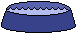
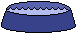
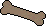
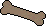
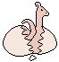

Fun Stuff
My Breedfiles
My Ukagaka/Screenmates
All About Cyberpets!
Links
Credits
Check out our blog!
Odie: You gotta help me! I lost my Duo Ball! I love playing it with Pinkie! Can you help me find it? (Ruff ruff woof woof, woof ruff woof ruff! Ruff roof, woof ruff! Ruff woof woof!) Here's a photo of it: 
Rubber Duo Ball image from the Petz Wiki.
Mon, Apr 3, 2023Odie Meets Mittens
Mittens and Deal don't seem to get along with each other. But Odie shakes and nods his head toward Mittens, and likes the little pup, while Pinkie gets along with Deal.
Odie handstands, cute puppy! Mittens and Odie chase each other.
Tue, Apr 4, 2023Deal and Mittens seem to tolerate each other; Deal and Ruby love to play! Odie and I played tug of war for some time; Mittens was cheering on Odie, while Deal was cheering on me! In the end, Odie won. I played a game with Pinkie and I won. Pinkie and Deal had a staring contest.


My Breedfiles (feel free to edit 'em)
Cute Alien Dog (original idea by me; textures by Filthy Hippie; alternate version here!)Wheatley (from Portal)
Bloo (from Foster's Home for Imaginary Friends)
The Narrator (from The Stanley Parable; his appearance is based on an old fuzzy toy I have that makes sound when you shake it; textures by Filthy Hippie)
Homer Simpson (from The Simpsons; retexture of Phantasm's Packing Peanut Sheepie; vortex and yellow textures by Filthy Hippie & BC textures by Butterfly Chaser; inspired by a Tumblr fanart.)
My Ukagaka/Screenmates
Pinkie Pie and Rainbow Dash - Made with the help of Zarla's guide :D Comes with a custom balloon. MLP calendar skin also available!The Narrator - Made with the help of Zarla's guide :D Uses the Twinkling Galaxy Hues balloon by Zichqec.
ButtonToy - Made with the help of Zichqec's Simplicity Template :D Uses the Balloons balloon by Zichqec and Galla.
Homer Simpson - Made with the help of Zichqec's Simplicity Template! Uses my Sky Balloon :D
Galaxy Butterfly - Made for Ghost Jam 2024! :D
Reassurance Bucket - Made for the Hydrate Shell Jam 2023! :D
All About Cyberpets!
Cyberpets were really cool pets you could have online in the late '90s and early 2000s. They're actually the precursor to Closed Species, as well as virtual pet sites like Neopets, Flight Rising, Poppy Seed Pets, and so on. (FR is my favorite pet site! I'm Redspike944 on there, and DonutKitty on Pixel Cats' End, made by an FR member. I'm also Cucumber Alpha on Poppy Seed Pets; it's really cool, kinda like The Sims but with lil' critters instead). They were basically small pictures of cute animals (fantasy or real) you could have on your website. Some animated, some had lore, some were just plain ol' pictures, some used Flash (like BunnyHero Labs)... Some even grew! Some required filling out adoption forms to officially adopt; you couldn't just download 'em and upload the picture to your site as the pix were watermarked. There was even an adoption certificate for each unique pet! People took it very seriously at the time. Some were not even pictures! Just poems of fortunes that animated (or didn't).
For pets that grew up, people sent in a form and got back either a seed or baby pet which 'grew up' on their website; each week the owner had to send an e-mail to the creator of the pet, who would then send the next image, and the owner could change it on their site. That way, each pet would grow up into a unique adult.
Alas, I never grew up with 'em as I was born after they stopped being as popular.
One of the most popular of these 'cyberpet agencies' in its heyday was Asynjur's Adoption Central (aka Bear Jests). They adopt out fantasy cyber pets, like the Suxen. But apart from that, they also have teddies and seals to adopt, so it's not all fantasy, and they have their own guide on how to start your own cyberpet agency!
As far as CAs go, this one is relatively lenient; all it asks you to do is credit 'em, copy the picture to your own server (at the time, this was a huge deal), only use it on kid-safe sites, and don't edit it.
Another one is BillyBear4Kids.org! They have Purp Beans and other fantastical creatures, but they also have teddies and rabbits. They also have desktop screenmates for your computer! There's even a Purp Bean screenmate :P
Their rules are also quite lenient - their only requirements are exactly the same as Bear Jests.
Without further ado... My cool cyberpets (seals, pet rocks, purp beans, hedgehogs, candycorns, and more!):
Bear JestsBilly Bear's Playground
Woobie World

Rainbow Dash is my cute Woobie pony!
Dancing Moomin adopted from Lost Letters :D

This is my cute teddy bear, Horris! I love to hug 'em all day. They go on adventures involving apple trees and treehouses ;)

This is Pinky & Sunny, my other teddy bears who are friends of Horris :)

Purp Beans are my favorite Billy Bear pet. I even have a screenmate of 'em, which I play with from time to time.

"Hi... I am a boy HedgeHog, named Tom. I am only 3 months old. I like to eat bananas... they are my favorite food!"


"Hi... I am a girl HedgeHog, named Molly. I am only 2 months old. I like to eat blueberries... they are my favorite food!"


Apple, the red bunny, loves to explore the house.
These lil' guys love to hop around and do good deeds for carrots, bananas, etc.


Smarty, Billy, and Silly Skipper are the pet rocks, and Key Lime, the jumping bean, takes care of them.


 



 

Barry, Lenny, Dan, Ruby and Lilo are 5 cute puppies, each with their own doghouse! It was hard to track 'em down due to the Wayback Machine not saving everything, although I found many of them on my External Hard Drive as I saved them when I was younger. Here's a ZIP containing the Doghouse stuff, including the dogs and accessories I found on my EHD, as well as rescued through other sites. I recreated the pink and red water bowls and the yellow doghouse with green roof.


These cuties love to play hide-and-seek together. The stoat's name is Banana, and the seals' names are Strawberry, Mango, and Lemon.


Strawberry, Lemon, and Mango's friends.


Farmer Kitty welcomes you to their ranch!


These Avisaurs have been attracted by my garden. They're really cool to watch fluttering around the trees.

That's all of 'em! Sadly, they faded away in popularity, but happily, sites like Flight Rising, Xanje, Poppy Seed Pets, Pixel Cats' End, and Neopets exist so you can still have your own online virtual pets.


Links


Credits
"Wallpaper"Kevin MacLeod (incompetech.com)
Licensed under Creative Commons: By Attribution 3.0
http://creativecommons.org/licenses/by/3.0/
Clipart Animations Copyright © Loraine Wauer Ferus